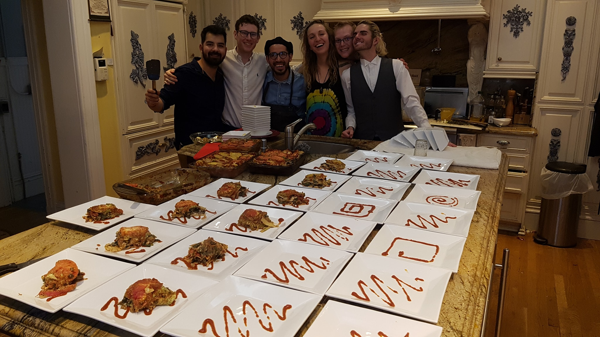

Restaurant Night Reflection
September, 2018
I wrote this piece as part of an application for a job I didn't get. I forget what the prompt was, but it was fun to reflect on an evening that was one of the most rewarding of the past few years.
In January, I led and hosted a 6-course restaurant night for 40 people in my living room.
I live in and help run a 30-member cooperative house in a restored Victorian mansion in the Haight. The home has all of the original decor, which gives it tremendous (but previously unrealized) potential to hold formal events.
I planned several similar dinners as a dining hall manager at Stanford but this was still quite a significant undertaking. My personal work overhead was substantial: I compiled and graphic designed a menu, sourced food, rented and picked up tables, dishes, and cutlery, filled the guest list, enlisted servers, and booked performers. These tasks complete, most of the necessary pieces were in place by the night of the event. The dining room was clean and decorated; it looked better than it ever had. However, the most important and most rewarding aspect of the event was the human factor—the buy-in that I was able to create among my housemates to make the event run seamlessly. Many of them brought new features to the dinner that I would not have dreamed up, nor would I have been able to execute without them.
I walked into the kitchen after a last-minute supply run to find a large group of housemates had thrown themselves into the food preparation, doing all the things I had expected to handle with my small crew of volunteers. Most had previously expressed no interest in helping, but were so excited by the transformed living room that they had dived in. They were designing artsy plating layouts, an assembly line to ready each course for serving, and even added an additional appetizer. A seamless team dynamic appeared from nowhere. Their energy and input made the whole evening run seamlessly—making only some small suggestions, I could stand back and watch everything unfold. The guests left full and satisfied, but it was clearly the contributors who had enjoyed themselves the most.
It was incredibly empowering to see that I could prompt such an elaborate event to happen from scratch by providing the activation energy. But, it was even more rewarding to have begun something that others were so excited to contribute to and that they got value from being part of. I was most proud that the event took on new life independent of what I had imagined. I was foundational to it, but it took off because others were inspired to join. This remains one of the most important lessons that I’ve learned personally or professionally.